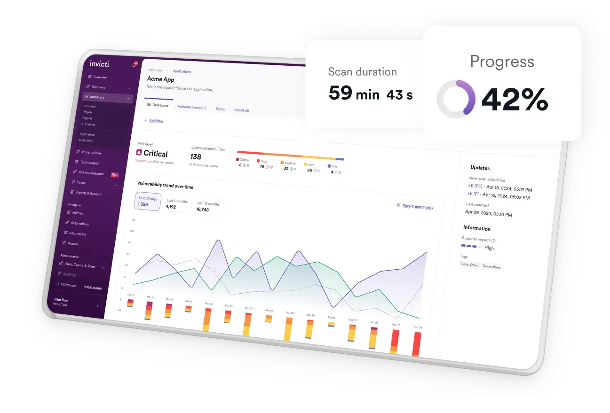
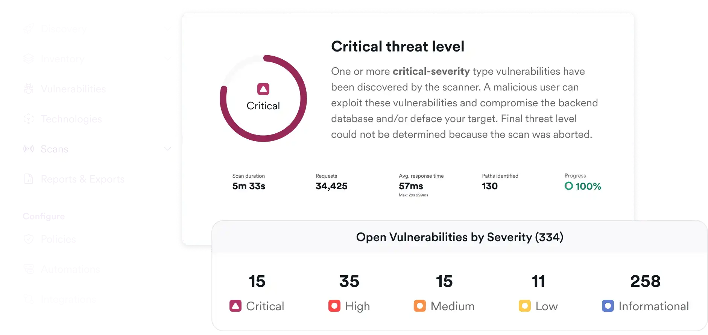
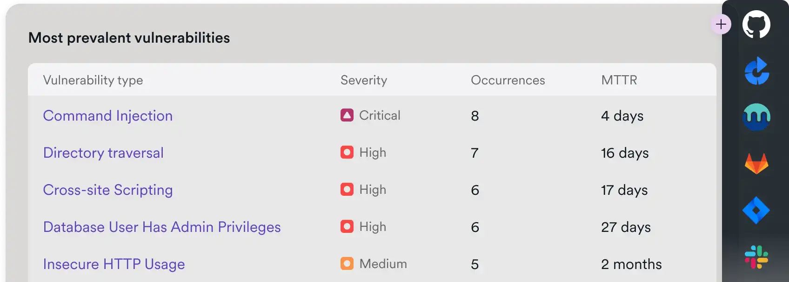
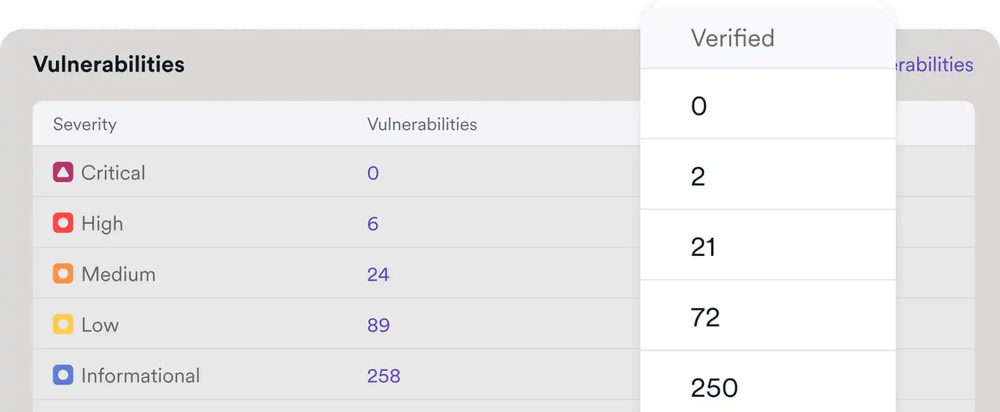
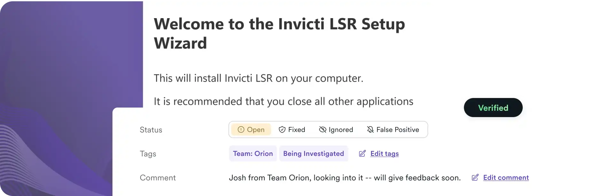

请访问原文链接：Invicti Standard v26.8.0 for Windows - 企业级 Web 应用与 API 安全 查看最新版。原创作品，转载请保留出处。
作者主页：sysin.org
Invicti 源自 DAST 先驱 Netsparker 和 Acunetix，并融合了 Kondukto 提供的 ASPM 能力，是唯一一款基于验证的应用安全平台，能够在攻击者利用之前发现、验证并优先排序真实漏洞。

3600+ 家顶级组织信任 Invicti
完整的 AppSec 覆盖
以信心验证漏洞、自动化修复并管理风险态势
Invicti 关联来自所有测试工具的结果，确认哪些是真实问题，并通过 AI、自动化和 ASPM 推动更快的修复。
发现（Discover）
发现组织中的每一个网站、应用、API 以及隐藏资产。
预测（Predict）
在测试开始之前，识别并评分风险最高的应用。
扫描（Scan）
以 99.98% 的准确率扫描网站、应用和 API，检测漏洞。
优先级排序（Prioritize）
在单一视图中关联所有安全测试工具的结果，并按风险对漏洞进行优先级排序。
精准定位（Pinpoint）
发现其他扫描器无法识别的隐藏文件，自动精准定位代码位置，让开发人员无需手动查找漏洞。
修复（Remediate）
生成 AI 驱动的修复方案，向开发人员展示每个漏洞的根本原因，并提供逐步的解决方法。
部署（Deploy）
通过基于验证的校验、AI 指导的修复，以及映射至 PCI DSS、SOC 2 等标准的合规就绪报告，实现安全代码交付。
行业领先的 DAST，驱动智能 AppSec 平台
其他 AppSec 平台只是将 DAST 作为事后补充；Invicti 从一开始就以 DAST 为核心构建，并加入行业领先的 ASPM 功能，用于统一、验证并优先处理整个安全技术栈中的告警 (sysin)。Invicti 提供无缝集成、经运行时验证的高准确性、更快的修复速度，以及对风险态势的真实洞察。
SAST | SCA | 容器安全 | DAST | API 安全 | ASPM
查找、优先排序并修复代码漏洞
Invicti 与领先的 SAST 提供商集成，为团队带来两全其美的能力：对所有应用代码进行前瞻性的静态测试，并结合 DAST 的基于验证的确认机制。这是真正没有噪音的 SAST。

世界领先的 DAST，因 AI 更强大
行业领先的 DAST 引擎持续通过 AI 创新不断进化，缩小自动化扫描与人工渗透测试之间的差距。Invicti 的 AI 创新不仅提升了 DAST 的准确性，还帮助修复由 AI 驱动软件带来的风险。
8 倍
扫描速度快于主要竞争对手
99.98%
可利用漏洞的确认准确率
70%
AI 修复方案的采纳率
40%
相比其他主流 DAST 产品发现更多漏洞
为开发人员和安全负责人简化 AppSec
CTO & CISO：
降低 AppSec 风险，证明 ROI，自信领导
- 通过 99.98% 准确率的扫描结果，大幅减少手动分流时间
- 使用灵活、可扩展的部署模型治理 1,000+ 应用
- 提供满足审计要求的资产与风险清单洞察

工程团队：
快速创新，安全交付，最小化开发干扰
- 基于验证的发现 = 不再浪费分流时间
- CI/CD 优先的集成，自动创建问题
- 面向开发者的修复指导 + 充分的分析空间

DevSecOps 团队：
解除交付阻塞，安全治理，凭可见性扩展规模
- 在不增加摩擦的情况下，将安全融入每一个流水线阶段
- 基于角色的访问控制，实现跨环境的安全自治
- 支持认证后扫描与跨应用扫描，提供深度运行时可见性

深受高度监管行业信赖
行业
- 政府
持续满足合规标准，保持 ATO。 - IT 与电信
跨环境扩展，集成至 CI/CD 工作流，快速修复真实漏洞。 - 金融服务
安全创新，加速开发。 - 医疗健康
保护患者数据，通过内置报告证明 HIPAA 合规性。
与你已在使用的工具无缝集成
已与 110+ 解决方案集成
Invicti 版本
Invicti Web 应用程序安全扫描程序有两个版本：
- Invicti Enterprise 是一种多用户企业和可扩展解决方案，可按需提供或作为本地解决方案提供（Invicti Enterprise On-Premises、Invicti Enterprise On-Demand）。
- Invicti Standard 是一个单用户 Windows 应用程序。
Invicti 的两个版本都使用相同的 Proof-Based Scanning 技术来提供高度准确的扫描结果。此外，两者都易于使用，并且彼此完全集成，并支持与许多其他工具的集成。
Invicti Enterprise 是一个多用户在线 Web 应用程序安全扫描解决方案，具有内置的工作流工具。它专为帮助企业在几个小时内扫描和管理数百甚至数千个网站的安全性而设计 (sysin)，无需安装任何新的硬件或软件。
Invicti Enterprise 用于集成到软件开发生命周期、DevOps 和实时环境中，以在实时环境中开发或运行数千个 Web 应用程序和 Web 服务时对其进行扫描。它也可作为本地版本提供。
Invicti Standard 可作为带有内置渗透测试和报告工具的 Windows 应用程序提供，其中许多工具允许完全自动化的安全测试。Invicti Standard 用于进行手动分析和利用，非常适合需要进行更高级测试的情况，例如需要用户输入的单个组件。
系统要求
支持最新的 Windows x64 操作系统，包括但不限于：
建议运行在虚拟机环境中，推荐使用本站原创虚拟机模板 OVF，简单、精准、高效。
新增功能
Invicti Standard Release v26.8.0
发布日期：2026 年 8 月 13 日
🔧 改进
- 默认扫描策略支持 TLS 1.3： 默认扫描策略现在包含 TLS 1.3，确保能够成功扫描要求使用现代 TLS 协议的服务器。
- Invicti Standard 升级至 .NET 10： 该应用程序现已运行于 .NET 10，在性能方面得到改进 (sysin)，并兼容最新的平台功能。
🐞 已解决的问题
- 多文件 RAML 导入： 修复了无法导入多文件 RAML 定义的问题，现在可以上传 ZIP 压缩包，所有外部引用和库都会自动解析。
- GraphQL 漏洞报告现可显示正确的请求和响应数据： GraphQL 检查的安全报告现在能够准确显示检测到的漏洞对应的请求和响应详细信息。
下载地址
Invicti Standard 17 Jan 2023 v23-1-0 [EoD]
Invicti Standard 22 Feb 2023 v23.2.0 [EoD]
Invicti Standard 16 Mar 2023 v23.3.0 [EoD]
Invicti Standard 24 Apr 2023 v23.4.0 [EoD]
Invicti Standard 11 May 2023 v23.5.0 [EoD]
Invicti Standard 07 Jun 2023 v23.6.0 [EoD]
Invicti Standard 19 Jul 2023 v23.7.0 [EoD]
Invicti Standard 17 Aug 2023 v23.8.0 [EoD]
Invicti Standard 06 Sep 2023 v23.9.0 [EoD]
Invicti Standard 18 Oct 2023 v23.10.0 [EoD]
Invicti Standard 16 Nov 2023 v23.11.0 [EoD]
Invicti Standard 13 Dec 2023 v23.12.0 [EoD]
Invicti Standard v24.1.0.43324 - 09 Jan 2024 [EoD]
Invicti Standard 30 Jan 2024 v24.1.0.43434 [EoD]
Invicti Standard 20 Feb 2024 v24.2.0.43677 [EoD]
Invicti Standard 12 Mar 2024 v24.3.0 [EoD]
Invicti Standard 28 Mar 2024 v24.3.1 [EoD]
Invicti Standard 17 Apr 2024 v24.4.0 [EoD]
Invicti Standard v24.5.0 - 7 May 2024 [EoD]
Invicti Standard v24.6.0 - 13 June 2024 [EoD]
Invicti Standard v24.7.0 - 9 July 2024 [EoD]
Invicti Standard v24.8.0 - 13 August 2024 [EoD]
Invicti Standard v24.8.1 - 27 August 2024 [EoD]
Invicti Standard v24.9.1 - 24 September 2024 [EoD]
Invicti Standard v24.10.0 - 08 Oct 2024 [EoD]
Invicti Standard v24.11.0 - 12 Nov 2024 [EoD]
Invicti Standard v24.12.0 - 03 Dec 2024 [EoD]
Invicti Standard v25.1.0 - 14 Jan 2025 [EoD]
Invicti Standard v25.2.0 - 13 Feb 2025 [EoD]
Invicti Standard v25.3.0 - 11 Mar 2025 [EoD]
Invicti Standard v25.4.0 - 08 Apr 2025 [EoD]
Invicti Standard v25.5.0 - 06 May 2025 [EoD]
Invicti Standard v25.5.1 - 28 May 2025 [EoD]
Invicti Standard v25.6.0 - 18 Jun 2025 [EoD]
Invicti Standard v25.7.0 - 08 July 2025 [EoD]
Invicti Standard v25.8.0 - 13 August 2025 [EoD]
Invicti Standard v25.9.0 - does not exist
Invicti Standard v25.10.0 - 14 October 2025 [EoD]
Invicti Standard v25.11.0 - 11 November 2025 [EoD]
Invicti Standard v25.12.0 - 0 December 2025 [EoD]
Invicti Standard v26.1.0 - 13 January 2026 [EoD]
Invicti Standard v26.2.0 - 10 February 2026 [EoD]
Invicti Standard v26.3.0 - 10 March 2026 [EoD]
Invicti Standard v26.4.0 - 14 April 2026 [EoD]
Invicti Standard v26.5.0 - 12 May 2026 [EoD]
Invicti Standard v26.6.0 - 16 June 2026 [EoD]
Invicti Standard v26.7.0 - 16 July 2026 [EoD]
- 百度网盘链接：https://pan.baidu.com/s/1-s9luVxdJuCUhVZOGYAcfA?pwd= <专享>
- Filename: Invicti_26.7.0_setup.exe
- Size: 310MB
相关产品：
- Acunetix v25.11.0 (Windows, Linux) - Web 应用程序安全测试
- Magic Quadrant for Application Security Testing 2023
更多：HTTP 协议与安全

文章用于推荐和分享优秀的软件产品及其相关技术，所有软件提供免费版或试用版。内容若侵犯了您的版权，请联系作者删除。如果您喜欢这篇文章，或者觉得它对您有所帮助，亦或发现有不当之处；欢迎发表评论，也欢迎分享这个网站，或者赞赏一下，谢谢！提示：捐赠或赞赏属于自愿赠予行为，提交后即表示您对作者的支持与认可。为避免误操作，请在确认前仔细检查金额，支付完成后将无法撤销或退还。
 支付宝赞赏
支付宝赞赏  微信赞赏
微信赞赏赞赏一下
敬请注册！点击 “登录” - “用户注册”（已知不支持 21.cn/189.cn 邮箱）。 请勿使用联合登录（已关闭）。